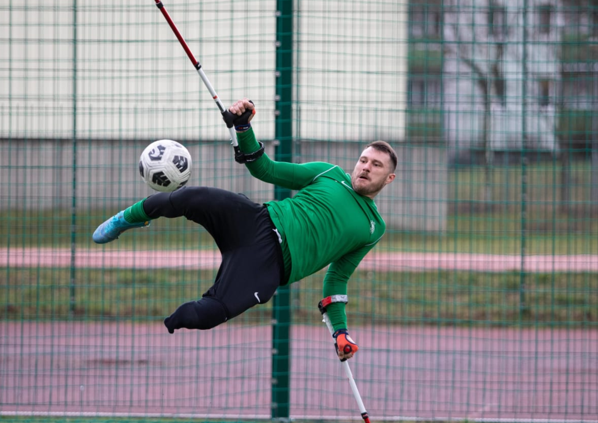

มาร์ซิน โอแล็กซือ (อายุ 37 ปี) เกิด11 เมษายน 2530 ที่เมือง Nowa Sól ประเทศโปแลนด์ เป็นนักฟุตบอลชาวโปแลนด์ที่สร้างความฮือฮาไปทั่วโลกด้วยความสามารถอันน่าทึ่งของเขา ถึงแม้จะสูญเสียขาไปหนึ่งข้าง แต่เขาก็ยังคงเดินหน้าเล่นฟุตบอลในระดับอาชีพ และสร้างประวัติศาสตร์ด้วยการคว้ารางวัล FIFA Puskás Award ซึ่งเป็นรางวัลสำหรับประตูที่สวยที่สุดในโลกประจำปี 2022 เขาเป็นตัวอย่างที่ยอดเยี่ยมของนักกีฬาที่ไม่ยอมแพ้ต่อโชคชะตา
ก่อนหน้านี้ โอแล็กซือเคยเป็นผู้รักษาประตูให้กับสโมสรในโปแลนด์ และได้รับการคาดการณ์ว่าจะมีอนาคตที่สดใสในวงการฟุตบอล อย่างไรก็ตาม ชีวิตของเขาต้องเปลี่ยนไปอย่างสิ้นเชิงเมื่อเขาประสบอุบัติเหตุที่ทำงานในปี 2010 และต้องสูญเสียขาไปหนึ่งข้าง แม้จะเผชิญกับอุปสรรคอันยิ่งใหญ่ โอแล็กซือก็ไม่ยอมแพ้ เขาหันมาเล่นฟุตบอลสำหรับผู้พิการขา และแสดงให้เห็นถึงความสามารถที่ยอดเยี่ยม จนกระทั่งได้โอกาสเล่นให้กับสโมสร Warta Poznań และทีมชาติโปแลนด์